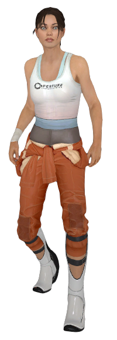
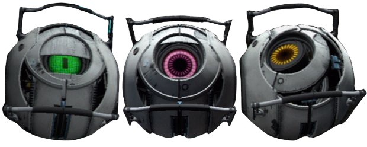
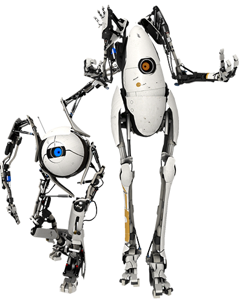

"Bienvenido de nuevo al Centro de desarrollo de Aperture Science."
🔊
- LOCUTOR
HISTORIA
Primera parte:
Las Cámaras de pruebas
Empiezas como Chell, despertando en una cámara de relajación, donde lo primero que escuchas es la voz de GLaDOS antes de ser
liberada al abrir un portal.
Mientras Chell pasa por las cámaras de pruebas, se vuelve mas claro que la instalación carece de vida humana, y GLaDOS esta
probando a Chell por su propia definición de "Ciencia".
Por el complejo se pueden ver escondites que contienen dibujos de Dough Rattmann avisando a los sujetos de prueba sobre GLaDOS.
Mencionando que GLaDOS mató a los empleados con Neurotoxinas, y "The cake is a lie". (La tarta es mentira)
GLaDOS motiva a los sujetos de pruebas con la promesa de tarta al final del circuito de pruebas mientras Chell avanza en las pruebas con
dificultad ascendente, hasta que ya no le es de utilidad y GLaDOS intenta asesinarla mandandola a un incinerador al final de las pruebas.
Chell utiliza la Pistola de Portales para escapar del incinerador y se adentra en las instalaciones para intentar escapar del complejo.
Segunda parte:
La fuga
Al escapar de la trampa mortal que GLaDOS puso a Chell, Chell recorre las instalaciones con la intención de huir de estas.
GLaDOS al ver que Chell escapó de su trampa y esta recorriendo las instalaciones, intenta convencer a Chell de que vuelva atras
con la promesa de Tarta y Fiesta, diciendo que su intento de asesinato fue un malentendido.
Cuando Glados se da cuenta que sus intentos de convinción son en vano, recurre a burlarse de Chell mientras intenta matarla
usando la infraestructura de las instalaciones.
Eventualmente Chell llega a la camara central donde GLaDOS esta instalada. Acto seguido, Chell se enfrenta
a GLaDOS retirando los nucleos de personalidad que tiene acoplados en su cuerpo y tirandolos a un incinerador, haciendo que GLaDOS
se vuelva inestable y se produzca una gran explosión que abre un hueco en el techo, haciendo que GLaDOS y Chell salgan disparadas
de las instalaciones.
Chell incosciente, recupera el conocimiento en el parking de las instalaciones, con los restos de GLaDOS en el suelo junto a ella,
mientras se ve arrastrada de nuevo a las instalaciones por un robot.
Cápitulo 1 y 2:
Despertares, Reinicio
Siguiendo los eventos de Portal, Chell es levantada 50 dias despues en su camara de relajación, que tiene una apariencia como una habitación
de hotel, para realizar un breve ejercicio físico y mental. 🔊
Después de su sesión de ejercicio, vuelve a su cama para ser criogenizada y ser despertada en un periodo indeterminado de años por un aviso de
fusión del núcleo del reactor. 🔊
Al despertar, Chell ve que su cámara de relajación esta sucia y destrozada, y unos mensajes pregrabados le indican que ha estado criogenizada
una cantidad idefinda de tiempo y avisandola de una evacuación de emergencia debido a una fusión del reactor.
Una voz le habla pidiendola que abra la puerta. Al abrir la puerta aparece Wheatley, un núcleo de personalidad
que esta encargado de todos los sujetos humanos, que al ser el unico sujeto de pruebas con vida, decide ayudarla para escapar los 2 instalaciónes.
🔊
Wheatley toma el control de la cámara de relajación, y la mueve a una zona de pruebas, similar a la del inicio de Portal, pensando que era un muelle
de carga.
Chell se ve obligada a separarse de Wheatley y entrar en las zonas de pruebas, muy deterioradas y algunas destruidas por el paso del tiempo, donde
unos mensajes pregrabados la guiarán hasta terminar las pruebas.
Chell va avanzando y se vuelve a encontrar con wheatley, que la indica donde esta el Dispositivo de portales.
Con ayuda de Wheatley, ambos salen de las zonas de pruebas y recorren las instalaciones con la esperanza de escapar, y durante su recorrido, encuentran
la cámara de GLaDOS, donde esta desconectada.
Wheatley pide a chell que pase por su cámara para encontrar el sistema de interruptores que activa la Cápsula de escape.
🔊
Al encontrar los interruptores, Chell conecta a Wheatley a la interfaz de control de la sala de interruptores para que encienda la luz, y por accidente,
Wheatley sube el ascensor de la sala de interruptores accionando todos los interruptores y activando a GLaDOS.
🔊
GLaDOS, enfadada por los sucesos de Portal, daña a Wheatley y tira a Chell por el incinerador donde quemó sus nucleos de personalidad.
En el incinerador, GLaDOS abre paso a Chell entre los escombros y le indica donde esta el Dispositivo de portales Dual para seguir con las pruebas.
🔊
Cápitulo 3 y 4:
El regreso, La sorpresa
Cuando GLaDOS no esta mirando, Wheatley aparece detras de una pared de una de las cámaras de pruebas para decir que ha sobrevivido y pide a Chell que
siga con las pruebas hasta que piense en una forma de escapar.🔊
A medida que Chell va completando las pruebas, las burlas de GLaDOS se vuelven más vengativas y se da cuenta que no le queda mucho tiempo ya que GLaDOS
insinua que ya no la es de utilidad.
Eventualmente, Wheatley corta la electricidad de la Cámara de pruebas y abre un panel en la pared que lo usan para escapar de la Cámara de prueba y
recorrer las instalaciones para intentar huir.🔊
Cápitulo 5:
La fuga
Una vez fuera del control de GLaDOS, Wheatley y Chell buscan una forma de escapar.
Durante su recorrido pasan por zonas claves de las instalaciones, como la fabrica automatizada de Torretas y paredes de portales, y el generador
de Neurotoxinas.
Chell y Wheatley sabotean la fabrica de Torretas cambiando la plantilla por una Torreta defectuosa y cortando los tubos del generador de
Neurotoxinas utilizando un laser y la pistola de portales.
Llenos de esperanza al quitarle las armas a GLaDOS, se disponen a ir a su camara para intentar derrotar a GLaDOS una vez mas.
GLaDOS intenta matar otra vez a Chell, pero no puede debeido al sabotaje que Chell y Wheatley hicieron las instalaciones. En este punto, el locutor
anuncia que el núcleo central, GLaDOS, esta dañado al 80%, y detecta a Wheatley como un núcleo sustitulo.
GLaDOS intenta desesperadamente frenar a Chell para evitar el cambio de núcleo, pero falla y Wheatley se hace con el control de las instalaciones.
🔊
Cápitulo 6:
La caída
Wheatley, contento por tener el control de Aperture Science y quitar a GLaDOS del control, se dispone a enviar a Chell a la superfice, pero antes,
transforma a GLaDOS en una bateria de patata. GLaDOS se burla de Wheatley, enfadado y confuso por las acusaciones y burlas de GLaDOS,
golpea el ascensor donde estaba Chell enviando a GLaDOS y a Chell a una muerte segura.
Cayendo sin control por el hueco del ascensor hasta los niveles más profundos de las instalaciones, GLaDOS, revela a Chell que Wheatley fue diseñado
para ser el mayor cretino de la historia, creado para acoplarlo a GLaDOS y atontarla.
🔊
Tras cinco kilometros de caida, chell despierta en lo profundo de las instalaciones de Aperture Science, y ve como un pájaro se lleva a GLaDOS.
Chell confusa y perdida, camina entre las ruinas de las antiguas instalaciones de Aperture Science, para encontrar una salida, eventualmente encuentra
una zona sellada, la cual, son las pruebas y experimentos que hacian en los años 1940-1980.
Al entrar en la zona sellada, escucha una serie de mensajes pregrabados de Cave Johnson, fundador, CEO y dueño de Aperture Science.
Los mensajes pregrabados de Cave Johnson guian a Chell por las camaras de pruebas hacia el exterior mientras va revelando la historia de Aperture Science
Durante su recorrido, Chell activa las turbinas que bombean los geles de movilidad que la permitiran progresar en las pruebas para volver a la capa superior.
🔊
Cápitulo 7:
El reencuentro
Mientras Chell avanza por las ruinas del pasado de las instalaciones de Aperture, se encuentra a GLaDOS en un nido de pajaro, y convence a Chell para
ayudarla a retomar el control de las instalaciones. 🔊
Chell sigue ascendiendo hacia la superfice por las cámaras de pruebas, GLaDOS escucha un mensaje pregrabado de Cave Jhonson y su Secretaria, GLaDOS se muestra confusa
y estresada ya que esa voz le resulta muy familiar, y en un descontrol de sus emociones, sobrecarga la bateria de patata y se apaga durante unos instantes.
En una de las grabaciones de Cave Johnson, confiesa que se ha envenenado durante el desarrollo del Gel de Conversión, 🔊
y que ha puesto a sus empleados a investigar sobre como guardar los sentimientos y personalidad humana en un CD, como fin asegurar la existencia de
Cave Johnson en caso de que no descubran un antidoto a su envenenamiento.🔊
En el la ultima capa de las instalaciones subterraneas, Chell encuentra una entrada a la capa superior de las instalaciones, la cual es un conector de tubos
de los Geles de Movilidad.
Al abrir la compuerta, GLaDOS ve un poster en la pared que indica a los empleados como apagar una IA en caso de emergencia lanzando una paradoja, y se
dispone a usar esa estrategia para apagar a Wheatley y retomar el control.🔊
Cápitulo 8:
El hormigueo
Chell y GLaDOS vuelven a la capa superior de las instalaciones de Aperture Science, descubriendo que es un completo caos.
Wheatley, descubre que el cuerpo donde esta le pide hacer pruebas o sentirá un hormigueo insoportable que no desaparece hasta que no realice pruebas.
Chell y GLaDOS aparecen en una cámara de pruebas en la que Wheatley estaba probando las Franketorretas (una fusion de un cubo contrapesado y una torreta)
que al completar la prueba, Wheatley aparece y GLaDOS casi se suicida al lanzar una paradoja a Wheatley, que al no prestar atencion, este no la escucha.
Con Chell y GLaDOS de vuelta en la capa superior, Wheatley las fuerza a seguir con las pruebas, pruebas que segun van avanzando, van viendo el deterioro de
las instalaciones que Wheatley esta produciendo al no saber o querer mantener las funciones de mantenimiento de las instalaciones.
A raiz de esto, GLaDOS descubre que Chell no es su enemiga y empieza a cambiar su adtitud, y la rabia de GLaDOS va aumentando poco a poco mientras ve como las
instalaciones se van degradando.🔊
Wheatley, frustrado por los resultados de las pruebas les dice que tiene preparado una sorpresa "para morirse" en las proximas pruebas.
Cápitulo 9:
La parte donde nos mata
Antes de lo esperado, Wheatley empuja a GLaDOS y Chell fuera de las cámaras de pruebas con una Placa de Salto de Fé modificada hacia una zona aislada llena de placas
con pinchos, y confiesa que ha encontrado unos robots sujetos de prueba (Atlas y P-Body), y que por eso ya no las necesita.
🔊
Antes de que Wheatley le de tiempo a ejecutar a Chell y GLaDOS, Chell, aprovechando una gotera de un tubo de Gel Conversor, escapa junto a GLaDOS huyendo de la trampa
de Wheatley.
Recorriendo las instalaciones, Wheatley utiliza su infraestructura en su contra para intentar matarlas y evitar su avance.
Poco a poco Chell y GLaDOS se van acercando a la camara de Wheatley, para enfrentarse a el y quitarle del control de las instalaciones.
Al llegar a la camara de Wheatley, GLaDOS ve un almacen de Núcleos de Personalidad corruptos, y se le ocurre la idea de acoplarle los núcleos
para forzar un cambio de núcleo.🔊
Chell entra en la sala para encararse con Wheatley, el cual ha preparado su camara para que Chell no pueda usar su pistola de portales y dotado de un
dispensador de bombas para matar a Chell junto a Neurotoxinas, las cuales son utilizadas para destruir unos tubos de geles de movilidad que facilitan el
movimiento y permite el uso de portales en su camara, mientras el locutor anuncia la autodestrucción de las instalaciones por una fusión del núcleo del reactor.
🔊
Una vez acoplados varios núcleos corruptos al cuerpo de Wheatley, el locutor anuncia que el núcleo esta corrupto y que un técnico en resolución de
conflicto debe solucionarlo. Chell va a pulsar el botón de resolución de conflictos para iniciar el cambio forzado de núcleo, pero antes de llegar
descubre que hay unas bombas detras del botón, y al expltotar empuja a Chell lejos del boton.
La explosión provocó un agujero en el techo, permitiendo ver la luna. Chell, tumbada en el suelo e inmovil, utiliza la pistola de portales para crear un
portal en la luna en un intento desesperado por quitarle del poder.
El portal absorbe a Wheatley y Chell. Wheatley enganchado al cuerpo por un cable, intenta volver, pero GLaDOS teniendo el control de las instalaciones,
utiliza un gancho para expulsar a Wheatley y salvar a Chell.
Una vez arreglado todo con GLaDOS en el poder, Chell despierta, y GLaDOS confiesa que es muy dificil matar a Chell, y le da las gracias por ayudar a
encontrar a Caroline dentro de ella, y acto seguido, borrar a Caroline del sistema.
🔊
GLaDOS lleva a Chell a la superficie en un ascensor despidiendose de ella con una ópera de Torretas.
APERTURE SCIENCE
Aperture Science fue una empresa fundada por Cave Johnson en 1940 enfocada a la venta de cortinas de baño como Aperture
Fixtures, que más adelante cambió de nombre a Aperture Science para tener una imagen mas higiénica sobre la empresa, que
poco despues cambió su modelo de negocio a la ciencia y desarrollo de experimentos muy diversos.
Aperture Science se dedicaba a hacer practicas de investigación con sujetos humanos, los cuales eran seleccionados para
unas pruebas u otras en funcion de sus azañas, entre estos se pueden encontrar deportistas olímpicos, heroes de guerra,
bomberos y astronautas. 🔊
Esta empresa desarrollaba investigacones y experimentaba con algunos de sus avances, como el Gel de Repulsion, el Cubo
Contenedor Pesado, el Ultrabotón Industrial Extracolisionador de 1500 Megavatios, y el Dispositivo de Tunelado
Cuántico Portable de Aperture Science, una anterior y mas grande version de la moderna Pistola de Portales.
🔊
Con el paso de los años, Aperture Science se volvio inestable financialmente, ya no se podian permitir sujetos de pruebas
como astronautas y deportistas, asi que reclutaron vagabundos como sujetos de pruebas y empezaron a experimentar con
el Gel de Propulsión. 🔊
En la época de los 80, la participación en las pruebas era de caracter obligatorio para los empleados de Aperture
Science, aumentando la calidad de los sujetos de prueba, pero no la cantidad. Los problemas monetarios de la empresa
eran severos, pero el desarrollo continuó. Cave Johnson, en contra de las recomendaciones del departamento de contabilidad,
compró rocas lunares y las usó para desarrollar el Gel de Conversión, un buen conductor de portales.
🔊
Durante el desarrollo del Gel de Conversión, Cave Johnson se envenenó con las piedras lunares, haciendo que su vida se vea
en peligro de muerte. 🔊
A causa de este acontecimiento, Cave Johnson, se le ocurrió la idea de guardar la inteligencia y personalidad humana en un
disco, asi que puso a todos sus empleados a investigar sobre la Inteligencia Artificial y como guardar un cerebro humano
digitalmente, y la creación de robots para suplantar los sujetos de pruebas humanos.
🔊
Al morir, Caroline, su secretaria, tomó las riendas de Aperture Science, y a peticion de Cave Johnson, Caroline fue insertada
en un ordenador.
En 1998, GLaDOS (Genetic Life and Disk Operating System) fue activada por primera vez. GLaDOS instantáneamente se vovió
independiente y homicida, e inundo el centro de desarrollo con una Neurotoxina Letal, matando a gran parte de los cientificos.
🔊
Aperture Science fue cerrada y envuelta en un ciclo permanente de pruebas supervisadas por GLaDOS.
HISTORIA
CHELL

Protagonista de los juegos Portal y Portal 2, es antagonizada por GLaDOS en el trancurso de las pruebas.
Sujeto de pruebas número 1, aunque anteriormente era el número 1498, del centro de desarrollo computarizado
de Aperture Science.
Chell usa el Dispositivo de Portales para avanzar entre las pruebas, evitar peligros y avanzar entre las instalaciones de Aperture
Science para escapar.
La mayoria del pasado de Chell es un misterio. En los momentos finales de Portal, GLaDOS menciona varias veces que Chell fue abandonada
al nacer, dichas referencias aumentan en Portal 2, que menciona que fue adoptada y habla sobre su orfandad para distraer a
chell durante el transcurso de las pruebas.
En algun punto del 2010, Chell es puesta en la cámara de relajacion y despertada por GLaDOS para hacer un recorrido de pruebas con Cubos
contrapesados y Botones entre Portales
Durante el transcurso de las pruebas, Chell consigue la pistola de portales con la que puede hacer portales libremente.
Mientras progresa en las pruebas, Chell se encuentra con varias zonas abiertas que dan a un cubiculo fuera del area de pruebas en la cual
encuentra pinturas y escritos de Dough Rattmann denunciando a GLaDOS, mencionando el genocidio con neurotoxinas y que "La tarta es mentira".
Eventualmente GLaDOS intenta asesinar a Chell, y Chell se escapa utilizando el Dispositivo de Portales abriendose paso entre las instalaciones
para intentar escapar, llegando a la Cámara de GLaDOS donde vence y destruye a GLaDOS.
Al finalizar la pelea, Chell recupera el conocimiento en el parking de las instalaciones mientras un robot la arrastra al interior de las
instalaciones, y empiezan los acontecimientos de Portal 2.
GLaDOS
Antagonista de Portal y Portal 2, en la segunda mitad de Portal 2 GLaDOS se vuelve amiga de la protagonista.
GLaDOS es el núcleo central, diseñado para controlar, guiar y vigilar Aperture Science. Con la habilidad de mover las instalaciones
y cámaras de prueba. Es capaz de crear un circuito infinito de pruebas sin moverse de la cámara central de IA.
GLaDOS es un acrónimo de "Genetic Lifeform and Disk Operating System" (Forma de vida Genética y Sistema Operativo en Disco)
GLaDOS fue una creacion de Aperture Science, un Núcleo de Personalidad diseñado para ser un ordenador central. El proyecto empezó
bajo la supervisión de Cave Johnson, y fue un intento de crear una avanzada inteligencia artificial en la que iba a ser metido
Cave Johnson para esquivar a la muerte después de su intoxicación al desarrollar el Gel de Conversión.
Cave Johnson antes de morir, pidio a Caroline, su secretaria, que ocupase su lugar en GLaDOS.
Despues de una decada de duro trabajo, GLaDOS fue activada en 1988, y como parte de un evento de "Trae a tu hija al trabajo", GLaDOS
inundó las instalaciones con Neurotoxinas letales matando a todos los empleados. Sin embargo, Dough Rattmann consiguió sobrevivir y
modificar el registro de Sujetos de Pruebas para que Chell fuera la primera.
Desde el ataque, ha manejado las instalaciones hasta sus límites. Su primer sujeto de pruebas fue Chell, avisada de las intenciones de
GLaDOS mediante dibujos y frases escritos en zonas fuera de las cámaras de prueba por Dough Rattmann.
GLaDOS fue derrotada y desactivada por Chell al final de Portal, y reactivada por accidente en Portal 2, lo que hace que desarrolle un odio
mayor hacia ella.
Durante los eventos de Portal 2, GLaDOS es revocada del poder de las instalaciones, convertida en una Batería de Patata y expulsada por error
con Chell a las antiguas instalaciones de Aperture Science, donde se hace amiga de Chell y descubre que en su interior reside Caroline.
GLaDOS y Chell consiguen quitar del poder a Wheatley y evitar que las instalaciones estallen, acto seguido le da su gratitud a Chell, borra
a Caroline de su memoria y libera a Chell.
Sin sujetos de pruebas con los que experimentar, GLaDOS decide usar unos robots desarrollados para superar pruebas con el Dispositivo de Portales,
cuya misión es obtener información y documentos repartidos por las instalaciones que permitirán a GLaDOS tener el control total de las instalaciones
y abrir una cámara lleno de sujetos de pruebas humanos criogenizados.
WHEATLEY
Personaje principal y antagonista en la segunda mitar de Portal 2.
Wheatley, llamado "Esfera atontadora" por GLaDOS, es un núcleo de personalidad de programación masculina.
Wheatley es visto por primera vez por Chell, enganchado en un rail del techo de su habitación. Ayuda a Chell a huir de las instalaciones
por un peligro de fusión del reactor principal. Despues de desengacharse acompaña a Chell por las viejas cámaras de pruebas del centro.
Usando su compatibilidad con los sistemas de las instalaciones, permite a Chell usar atajos para avanzar por las instalaciones.
Eventualmente, llegan a la Cámara de GLaDOs, donde la despiertan por accidente. GLaDOS enfadada, machaca a Wheatley y tira a Chell por un
incinerador donde esta el Dispositivo de Portales Dual, que pide que recoja para seguir con las pruebas.
Después que que Chell inicie las pruebas, Wheatley se deja ver en multiples ocasiones, las cuales explica a Chell que van a escapar cuando
GLaDOS menos se lo espere.
Una vez que Chell escapa, sabotean las intalaciones para quitar la fuerza ofensiva de GLaDOS y poder quitarla del poder sin ofrecer resistencia.
Después de enfrentarse a GLaDOS, Chell ayuda a Wheatley a hacerse con el control de las instalaciones, transforma a GLaDOS en una batería de patata,
y en un arrebato de ira empuja a GLaDOS y a Chell por el hueco del ascensor, que comunicaria con las antiguas instalaciones de Aperture Science.
Cuando Chell y GLaDOS vuelven a la capa superior, ven que las acciones de Wheatley estan destruyendo las instalaciones de forma incosciente.
Wheatley obliga a Chell y GLaDOS a superar su pruebas, y eventualmente, intenta matarlas, fracasando en su intento, y haciendo que se enfrenten
contra el en su camara, expulsandolo al espacio cuando Chell puso un portal en la luna atraves de un agujero en el techo producido por una
explosión.
En el epílogo aparece Wheatley flotando en el espacio junto al Núcleo de Personalidad del Espacio orbitando alrededor suyo, arrepitiendose de todo
lo que le hizo a Chell.
CAVE JOHNSON
Personaje secundario con gran importancia en la hístoria del universo del juego.
Cave Johnson fue el Fundador, CEO y Dueño de Aperture Science.
Fallecido entre los años 1980-1990 por una intoxicación por polvo de piedra lunar, dejó un monton de grabaciones pregrabadas
desde el año 1940 hasta mediados de los 80 que guiaban a los sujetos de prueba por las instalaciones.
En 1953 Cave Johnson fundó Aperture Fixtures, una empresa de cortinas de baño, que mas adelante, renombró a Aperture Science Innovators,
que cambió su modelo de negocio por la ciencia.
Contrató a los mejores cientificos y empleados dedicados al campo, como Caroline, y a aquellos sin sentido del peligro para sus pruebas.
La mayoria de sus ideas eran descabelladas y, comunmente, mortales. Algunos experimentos involucraban cambiar la sangre del sujeto por
gasolina, mientras que a otros sujetos los exponia a motores de avión para reducir la cantidad de agua en el cuerpo.
La mayoría de sus inventos eran inutiles, salvo unos pocos como los Geles de Movilidad que iban apareciendo mientras avanzas por el juego.
Cuando Aperture fue creado, ya tenian desarrollado el Dispositivo de Tunelado Cuántico Portable, un prototipo tosco y pesado del Dispositivo
de Portales que lleva Chell durante el juego.
Con la competencia contra Black Mesa, Cave Johnson se volvia más y más nervioso, impidiendo que el desarrollo del Dispositivo de Portales
progresara rápido. Por esos tiempos, Cave Johnson convirtió a Caroline en su Secretaria y formó un papel importante en su vida.
Durante los años 80, el número de sujetos de pruebas se vio reducido, por lo que se vio obligado a usar vagabundos y a obligar a los
trabajadores a ser sujetos de pruebas. La tecnología avanzó bastante y empezó a reemplazar trabajadores por robots.
En sus últimos dias, Cave Johnson fue envenenado al moler Piedras Lunares que usaria para crear el Gel Conversor. Gracias a este suceso,
se le ocurrio la idea de investigar sobre la inteligencia artificial y el mapeado cerebral como medio para escapar a la muerte.
Cave Johnson dejó instrucciones para que Caroline tomase el mando de las instalaciones en caso de que el muriera antes de poder transferir
su cerebro a un ordenador.
Cave Johnson falleció a mediados de los años 80, aunque hay indicios en unos mensajes de texto en unos eventos posteriores a Portal 2 sugeriendo
que Cave Johnson si fue transferido a una IA.
CAROLINE
Personaje secundario con gran importancia en la hístoria del universo del juego.
Caroline fue la asistente personal de Cave Johnson, que cuando este murió, se volvió su sucesora.
No se conoce mucho sobre su personalidad, solo se la escucha en unas grabaciones que dejó Cave Johnson durante las Cámaras de Pruebas de la
antigua Aperture.
Cuando se deja claro que Cave Johnson no podria vivir para ver su proyecto de inteligencia artificial, deja claro que Caroline tomará las
riendas del complejo, y si fuera necesario, poner su cerebro en un ordenador.
Cuando Chell y GLaDOS son empujadas por Wheatley hacia las antiguas instalaciones de Aperture, GLaDOS reacciona de una forma emotiva a las
grabaciones de Cave Johnson, dejando claro que GLaDOS y Caroline estan relaccionadas, cosa que fue confirmada cuando, al final de Portal 2,
GLaDOS confiesa a Chell que ha descubierto donde esta Caroline dentro de ella, y acto seguido la borra.
En la canción de los créditos finales del juego, se puede escuchar "Ahora la pequeña Caroline también esta aquí." dando a entender
que GLaDOS no ha borrado completamente a Caroline.
En algunas lineas de voz que no fueron usadas, Caroline da a entender que no quiere ser transferida a un ordenador.
NÚCLEOS DE PERSONALIDAD

Los Núcleos de Personalidad, tambien conocidos como Esferas, son máquinas diseñadas para albergar inteligencia
artificial avanzada, unicas por su capacidad de expresar emociones y por ser capaces de trabajar con condiciones
energeticas mínimas
Los Núcleos de Personalidad aparecen en Portal y en Portal 2, usados como complementos para GLaDOS y dotarla de
sentimientos.
Mientras que en Portal 2, tras ser desactivada, los Núcleos de Personalidad como Wheatley, son
activados para controlar las instalaciones sin supervisión.
Fueron diseñados para poder acoplarlos al cuerpo de GLaDOS.
En la batalla final de Portal 2, GLaDOS envia Núcleos de Personalidad dañados a Chell para que se los acople
al cuerpo de Wheatley y forzar una transferencia de Núcleo. Mientras que en Portal eran usados para mitigar los
pensamientos homicidas de GLaDOS y estabilizarla.
Los Núcleos corruptos son acoplados a Wheatley para forzar la transferencia.
Portal
Núcleo de Moralidad.
Núcleo con el ojo de color Morado. Uno de los núcleos acoplados a GLaDOS mas importantes, evitaba que GLaDOS inundara las
instalaciones de neurotoxinas.
Núcleo de curiosidad.
Núcleo con el ojo de color Amarillo. Dotaba a GLaDOS de curiosidad. Este núcleo, cuando es retirado del cuerpo de GLaDOS, no para
de hacer preguntas curiosas a Chell.
Núcleo de inteligencia.
Núcleo con el ojo de color Azul. Contenia una receta de Tarta con algunos ingredientes peculiares y nocivos, es la razón por la que
GLaDOS no hace referencias a la Tarta en Portal 2.
Núcleo de Rabia.
Núcleo con el ojo de color Rojo. Núcleo que dotaba a GLaDOs de hostilidad. Cuando es retirado del cuerpo de GLaDOS, se pueden oir
gritos, rugidos y gruñidos ferozes que provienen de la esfera.
Es referenciado en Portal 2 como las bombas que utiliza Wheatley contra Chell en la batalla final.
Portal 2
Núcleo Aventurero.
Núcleo con el ojo de color Verde. Llamada Rick, cumple con el estereotipo "Hombre duro", hablando de su
valentia y sus gustos por las aventuras, que al ver a Chell coquetea con ella.
Núcleo Informativo.
Núcleo con el color de ojo rosa. es el típico "Sabelotodo" que dice datos a gran velocidad los cuales
una muy pequeña cantidad son verdaderas, siendo la mayoria falsos e ilogicos.
Núcleo Espacial.
Núcleo con el ojo de color Naranja. Núcleo hiperactiva obsesionada con el espacio exterior que siempre
habla sobre el espacio exterior, que quiere hacer y como le gustaria ir allí.
Se le concede su sueño al ser subcionado junto a Wheatley y Chell en la batalla final de Portal 2.
Núcleo Cretino.
Llamado Wheatley, personaje principal y antagonista en la segunda parte de Portal 2.
LOCUTOR
Forma parte de los acontecimientos de Portal 2.
El locutor es un sistema automatizado creado para monitorizar y anunciar los eventos de las instalaciones, como por ejemplo, la reactivación
de GLaDOS, o los avisos de evacuación de las instalaciones por fusión del reactor.
El locutor toma el control de las instalaciones mientras no esta siendo supervisado por una IA o persona, con subrutinas muy básicas,
manteniendo las instalaciones, y dando consejos y pautas a seguir a los sujetos de pruebas durante el transcurso de las mismas.
Se diseñó para funcionar en condiciones de energía extremadamente baja.
El locutor no tiene forma física.
DOUG RATTMANN
Personaje secundario que no aparece en el juego pero tiene una gran importancia en el transcurso de la historia de Portal y Portal 2.
Fue un cientifico de Aperture Science durante los eventos anteriores a Portal. Cuando GLaDOS inundó las instalaciones con Neurotoxinas,
Doug Rattmann sobrevivió, siendo el unico empleado que se conoce que sobrevivió.
Doug Rattmann es un paranoico esquizofrénico dependiente a antipsicóticos, que cuando GLaDOS mató a todos los empleados, recorrio las
instalaciones dejando a los sujetos de pruebas advertencias sobre GLaDOS en zonas de las Cámaras de pruebas con paneles abiertos que
dan acceso a una pequeña zona de las instalaciones, donde se ve claramente que vivió en esas zonas durante unos dias.
En el comic "Portal 2: Lab Rat", se revela que es un empleado de Aperture Science que trabajó en el Dispositivo de Portales y que tiene
dudas sobre GLaDOS y los núcleos de moralidad que se la acoplaron para evitar que destruyera las instalaciones, remarcando que siempre
puedes ignorar tu conciencia. Sus miedos se justifican al ver que GLaDOS inundó las instalaciones con neurotoxinas.
Preprarado para las consecuencias, sobrevive al ataque de GLaDOS y se escabulle por las instalaciones dejando mensajes para los sujetos
de pruebas, y pone a Chell como el primer sujeto de pruebas.
Despues de los suceos de Portal, Doug Rattmann activa el soporte vital de la cámara de criogenización de Chell, permitiendo que sea
la única superviviente despues de haber estado criogenizada una cantidad indefinida de tiempo.
P-BODY & ATLAS

Personajes secundarios creados por GLaDOS que toman el protagonismo en la campaña cooperativa de Portal 2 después de los sucesos de la campaña
de un jugador.
P-Body referido como Naranja y Atlas como Azul por GLaDOS, son unos androides bipedos diseñados por GLaDOS después de que Chell escapara
para sustituir a los sujetos de pruebas humanos. con la escusa de "No es nada persona, pero tu ME MATASTES, es justo".
Atlas fue diseñado basandose en un Núcleo de Personalidad, mientras que P-Body se basó en una Torreta Centinela. Cada androide tiene
un Dispositivo de portales diferente al que porta Chell, siendo de color Azul y Violeta para Atlas, y Amarillo y Rojo para P-Body.
Al ser destruidos, estos son reconstruidos automaticamente por una máquina ensambladora manteniendo todos sus recuerdos, y devueltos a la prueba.
En algun momento posterior a los eventos de Portal 2, P-Body y Atlas son activados por GLaDOS para completar la Iniciativa Cooperativa de Pruebas
de Aperture Science, nunca completado previamente por sujetos de pruebas humanos.
La campaña cooperativa sigue los eventos de Portal 2 después de que Chell fuera exiliada de Aperture Science, donde GLaDOS activó a estos
2 androides para enviarlos a unas cámaras de pruebas cooperativas, donde les preparará de forma indirecta para ir a una cámara abandonada
donde guardan en estado criogenico cientos de sujetos de pruebas.
Durante sus trazados de pruebas, GLaDOS eventualmente les saca del trazado para ir a ciertas zonas como oficinas, que tienen información
sobre las instalaciones y algunos datos necesarios para poder localizar y abrir la cámara de los sujetos de pruebas en las instalaciones
subteraneas.
Una vez encontrada y abierta la cámara, GLaDOS, euforica al encontrar esos sujetos de prueba, destruye a P-Body y Atlas con la excusa de
que experimentar con ellos no aporta nada porque si mueren son reconstruidos.
Una semana y media despues son reconstruidos por GLaDOS para ayudarla a detener a un intruso en las instalaciones, pero les miente, y les dice
que han pasado miles de años, que ha solucionado la ciencia, y que hacen pruebas por el amor al arte.
Mientras P-Body y Atlas avanzan por un trazado de pruebas deteriorado con explosiones de fondo, GLaDOS confiesa que ha pasado una semana y media,
y que les ha despertado porque es su ultima opcion, en esa semana ha matado a todos los sujetos de prueba entrenandolos para matar, y que les
necesita para matar a una persona (refiriendose a Chell sin nombrarla), que estaba controlando las instalaciones desde un terminal prototipo de
GLaDOS en la capa subterranea de las instalaciones, donde en realidad, es un pájaro que esta creando un nido sobre el teclado del terminal.